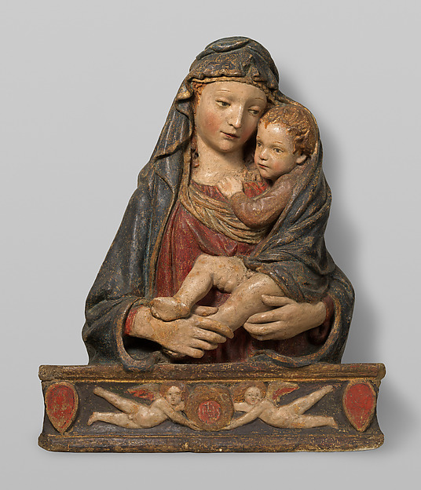

Study 02d · 11 October 202618.70.19 / composition and base
The noun changes
The Met's description follows two different relations in one relief. It links the Madonna composition to related works, then names an architectural source for the type of base. The photograph holds them together; the record gives them separate sentences.
18.70.19 / one photographAreas keyed below

A / Composition
B / Base type
AFigural group
Composition
The Met describes 18.70.19 as an apparent variant of a Madonna relief designed by Ghiberti for molded reproduction in painted stucco. It points to 08.22.3 as a painted-and-gilded stucco version, and to 07.120.3 for a terracotta version of this composition.
The related records describe other objects and materials; the photographs do not establish a shared mold.
BSupporting form
Type of base
The same record says the base type derives from the niche of the Parte Guelfa on Or San Michele by Donatello, finished in 1423.
That niche remains a textual source here. I have not placed an image of it beside the relief.
The relief makes one object out of two differently sourced forms.
The colored outlines point to regions in the supplied photograph; they are reading marks, not a reconstruction of manufacture. The museum's words attach the Madonna composition and the base type to distinct references, without turning the whole object into one simple line of descent.
The supplied image is shown whole. The two outlined areas are approximate visual guides and do not assert where a mold, joint, or separate piece begins.